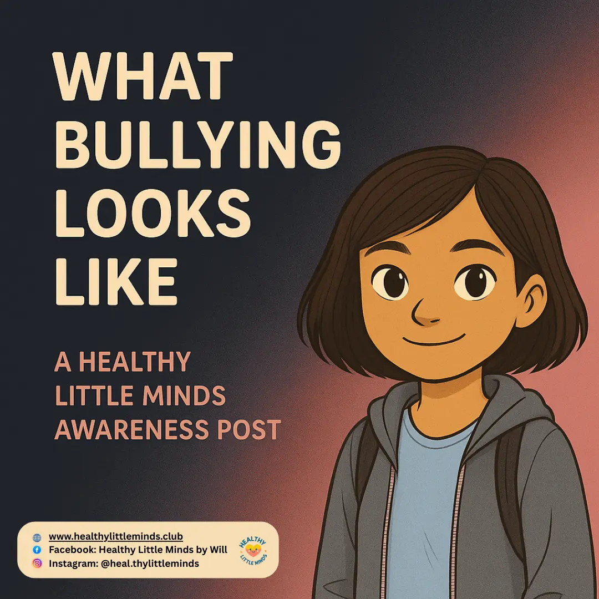

Connect with Healthy Little Minds
Small posts for meaningful conversations.
Follow along for emotional literacy stories, safety guidance, and gentle ideas families and educators can use with children.
Latest posts
Ideas children can carry with them.
Continue on the website